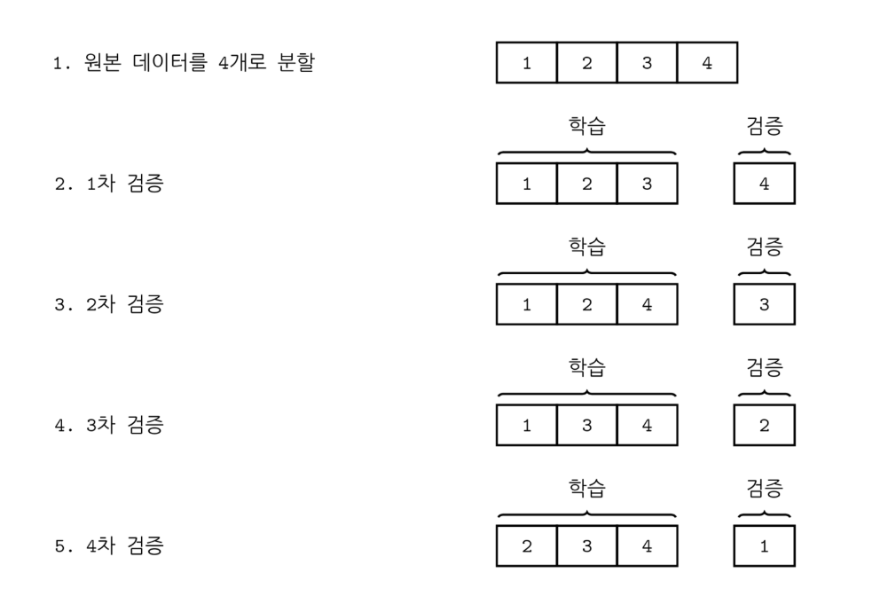

교차검증
Summary
- 교차검증을 하는 이유는 과최적화를 막기 위해서이다. validation set과 test set으로 나눠서 검증하는 것이다.
- 장점은 모든 데이터 셋을 평가에 활용할 수 있다는 점이다. 평가에 사용되는 데이터 편중을 막을 수 있고 평가 결과에 따라 좀 더 일반화된 모델을 만들 수 있다. 모든 데이터 셋을 훈련에 활용할 수도 있다. 정확도를 향상시킬 수 있으며 데이터 부족으로 인한 언더피팅을 방지할 수 있다. 단점은 Iteration 횟수가 많기 때문에 모델 훈련/평가 시간이 오래 걸린다.
학습용 데이터 집합(traing data set)은 모수 추정 즉 학습(training) 을 위한 데이터 집합이다.
- 표본내 성능 검증(in-sample testring)은 데이터 집합의 종속 변수값을 얼마나 잘 예측하였는지를 나타내는 성능이다.
- 표본외 성능 검증(out-of-sample testing), 교차검증(cross validation)은 학습에 쓰이지 않는 표본 데이터 집합의 종속 변수 값을 얼마나 잘 예측하는가를 검사하는 것이다.
과최적화 overfitting
과최적화(overfitting)는 표본내성능은 좋으면서 표본외 성능이 상대적으로 많이 떨어지는 경우이다.
검증용 데이터 집합
교차검증을 하려면 두 종류의 데이터 집합이 필요하다.
- 모형 추정 즉 학습을 위한 데이터 집합 (training data set)
- 성능 검증을 위한 데이터 집합 (test data set)
두 데이터 집합 모두 종속 변수값이 있어야 한다. 따라서 보통은 가지고 있는 데이터 집합을 학습용과 검증용으로 나누어 학습용 데이터만을 사용하여 회귀분석 모형을 만들고 검증용 데이터로 성능을 계산하는 학습/검증 데이터 분리(train-test split) 방법을 사용한다.
scikit-learn의 교차검증 기능
scikit-learn 의 model_selection 서브 패키지는 교차검증을 위한 다양한 명령을 제공한다.
단순 데이터 분리
train_test_split명령은 데이터를 학습용 데이터와 검증용 데이터로 분리한다. 사용법은 다음과 같다.
train_test_split(data, data2, test_size, train_size, random_state)
- data`: 독립 변수 데이터 배열 또는 pandas 데이터프레임
data2: 종속 변수 데이터.data인수에 종속 변수 데이터가 같이 있으면 생략할 수 있다.test_size: 검증용 데이터 개수. 1보다 작은 실수이면 비율을 나타낸다.train_size: 학습용 데이터의 개수. 1보다 작은 실수이면 비율을 나타낸다.test_size와train_size중 하나만 있어도 된다.random_state: 난수 시드
K-폴드 교차검증

scikit-learn 패키지의 model_selection 서브 패키지는 KFold 클래스를 비롯한 다양한 교차검증 생성기를 제공한다. 이 생성기의 split 메서드는 학습용과 검증용의 데이터 인덱스를 출력하는 파이썬 반복자(iterator)를 반환한다.
평가 점수
scikit-learn의 metrics 서브패키지에는 예측 성능을 평가하기 위한 다양한 함수를 제공한다. 그 중 회귀분석에 유용한 함수를 소개한다.
r2_score: 결정 계수mean_squared_error: 평균 제곱 오차(mean squared error, MSE)median_absolute_error: 절대 오차 중앙값(median absolute error, MAE)
교차검증 반복
위와 같이 교차검증을 반복하는 코드를 더 간단하게 만들어주는 함수가 있다. 바로 cross_val_score이다. 사용법은 다음과 같다.
cross_val_score(model, X, y, scoring=None, cv=None)
model: 회귀 분석 모형X: 독립 변수 데이터y: 종속 변수 데이터scoring: 성능 검증에 사용할 함수 이름cv: 교차검증 생성기 객체 또는 숫자.None이면KFold(3)- 숫자
k이면KFold(k)
단 cross_val_score 명령은 scikit-learn에서 제공하는 모형만 사용할 수 있다. statsmodels의 모형 객체를 사용하려면 다음과 같이 scikit-learn의 RegressorMixin으로 래퍼 클래스(wrapper class)를 만들어주어야 한다.
from sklearn.base import BaseEstimator, RegressorMixin
import statsmodels.formula.api as smf
import statsmodels.api as sm
class StatsmodelsOLS(BaseEstimator, RegressorMixin):
def __init__(self, formula):
self.formula = formula
self.model = None
self.data = None
self.result = None
def fit(self, dfX, dfy):
self.data = pd.concat([dfX, dfy], axis=1)
self.model = smf.ols(self.formula, data=self.data)
self.result = self.model.fit()
def predict(self, new_data):
return self.result.predict(new_data)
from sklearn.model_selection import cross_val_score
model = StatsmodelsOLS("MEDV ~ " + "+".join(boston.feature_names))
cv = KFold(5, shuffle=True, random_state=0)
cross_val_score(model, dfX, dfy, scoring="r2", cv=cv)